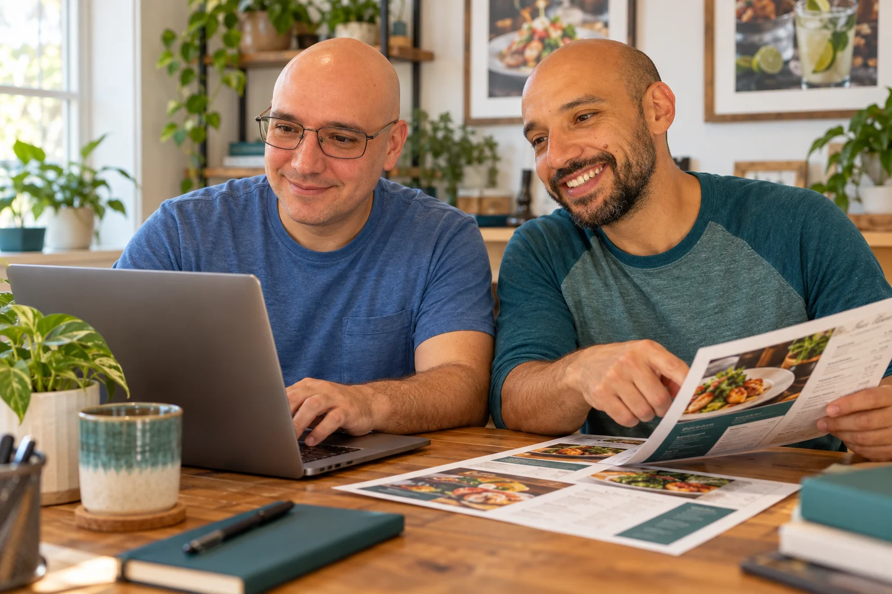
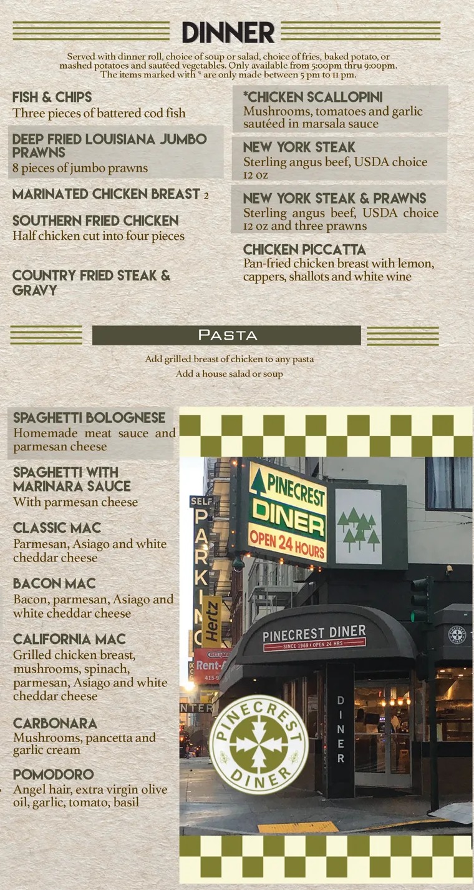

JP Battaglia
Coding & web development
JP handles the coding and web development, turning a visual direction and project requirements into a working website.
Website work

We’re JP and Nino Battaglia, twin brothers bringing web development, graphic design, and branding together. JP handles the coding and web development. Nino handles graphic design and branding. Together, we help independent businesses and personal brands shape their digital presence. Here’s who we are and some of the work we’ve made.

Code, design, and branding meet in the work we create for your business.
Coding & web development
JP handles the coding and web development, turning a visual direction and project requirements into a working website.
Website workGraphic design & branding
Nino handles graphic design and branding, shaping the visual identity and presentation behind the work.
Nino’s portfolioWebsites and menus for a donut shop, a personal brand, a pour house and a classic diner. Select a project to read its story.

Donut shop · Website and menu design
A bright pink-and-plum website and a printed breakfast menu for a family-owned San Francisco donut shop, with hours, ordering and the menu one tap away.

Personal brand · Website design
A bold look for a graphic designer’s website, with selected work, design services, and a shop for his artwork on shirts.

Pour house · Logo and website design
The bar’s street sign redrawn into a clean badge and wordmark, with a website for drinks and event bookings built around it.

Diner · Digital menu render
Olive accents, a classic checkerboard, and a photograph of the diner bring its character into a clear dinner and pasta menu.
Our services extend beyond the design projects above. Explore monthly care for your Google profile, website and guests.
Weekly posts, review replies and a monthly report that keep your Google profile active.
A monthly accessibility check of your website with plain-language fixes.
An app guests add to their home screen, with your menu, specials, hours and call button.
Try the interactive app concept A labeled walkthrough of menu browsing, saved items and offline viewing.
Every service is written up on its own page, so you know what you get before you checkout.
Your menu, logo, photos and words stay yours. Cancel a plan from your billing link at any time; it stops at the end of the paid period.
Menus, websites and guest apps we build are hosted by Menu-Made. Menu Care, Website Care, the Guest App plan and Mobile App Care keep them hosted and up to date.
Plans include changes on request through your private change link, each checked and approved before it goes live.